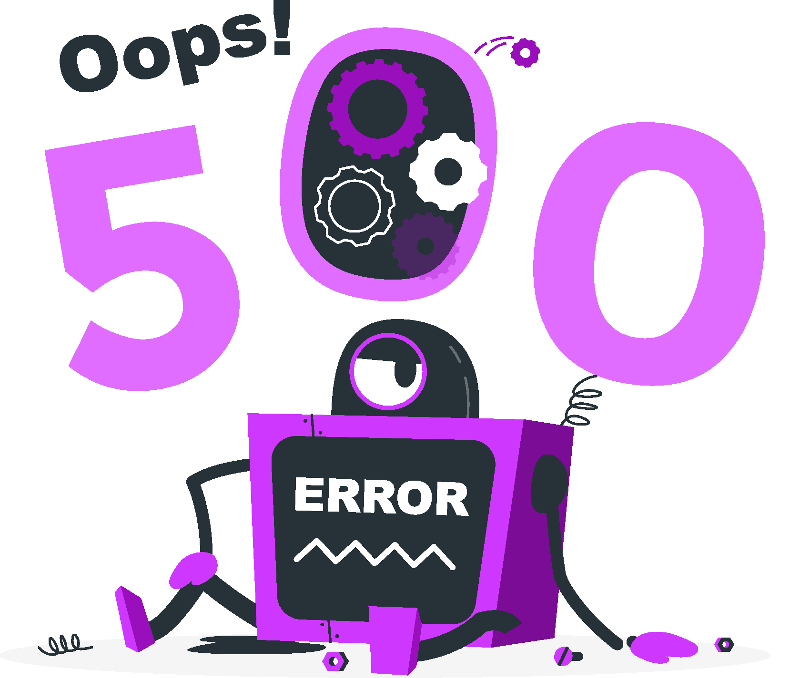

{% extends 'base/base.html' %}
{% load static %}

{% block content %}
    <div class="d-flex flex-column align-items-center justify-content-center align-content-center full-height" >
        
        <p class="fs-2x fw-boldest mb-13 mt-10 text-center">Error interno</p>
        <button class="btn btn-primary">Volver al inicio</button>
    </div>
{% endblock %}

{% block custom_scripts %}
<script type="module">
    import { removePageLoader } from "/static/assets/js/ranquiz/utils.js"

    removePageLoader();

</script>
{% endblock %}